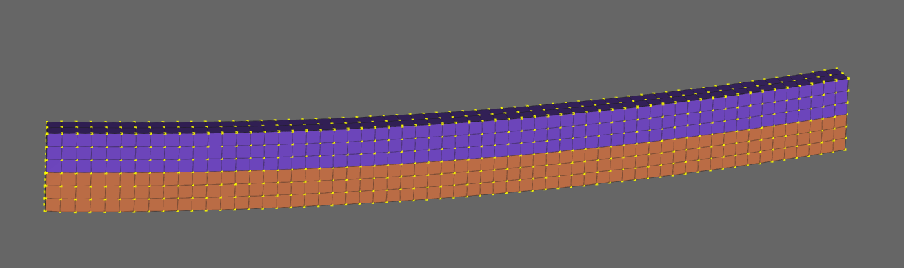
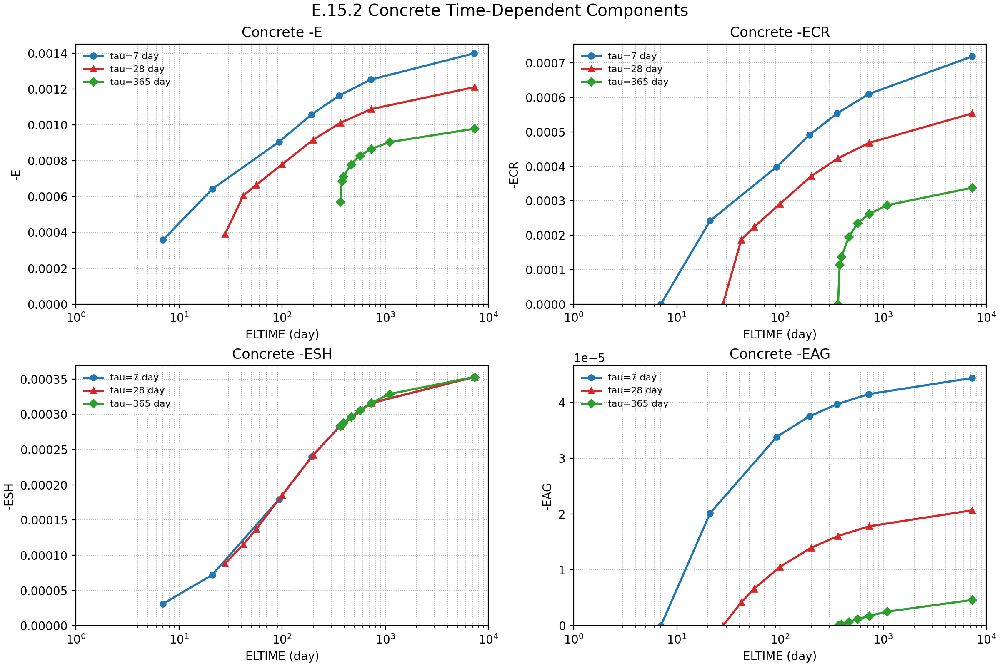
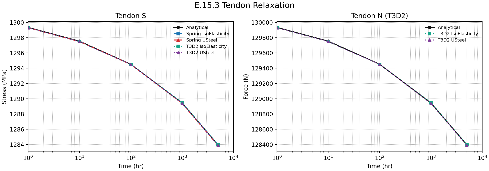

E.15 Time Dependent Materials
This example collects small material cases whose response changes with temperature or elapsed material time. The set contains a bimetal temperature-load example, concrete creep examples, and steel/rebar relaxation examples.
E.15.1 Bimetal Temperature Load Example
The bimetal structure is verified under a temperature load. When the two layers have the same thickness, the total thickness is \(h\), the elastic modulus is the same, and only the thermal expansion coefficients differ, the end displacement is:
In this example, \(L = 3000\) mm, \(h = 300\) mm, \(\alpha_{upper} = 5\times10^{-6}\), \(\alpha_{lower} = 10\times10^{-6}\), and \(\Delta T = 50\) K. The analytical solution is \(5.625\) mm, and the numerical result is \(5.67551\) mm at node 1361.

Figure E.15.1 Analysis Model
Input File
bimetal.inp
E.15.2 Concrete Time-Dependent Cases
A member with a 100 mm × 100 mm square cross-section and 200 mm length is loaded with a constant compression force (compressive stress 10 MPa) to verify the concrete time-dependent behavior. With EC2 applied, \(f_{ck}=30\) MPa. For loading ages \(\tau=7,28,365\) day, the load is held constant and the strain and displacement are compared against the analytical solution. The IsoElasticity and UGeneric materials are applied to verify a variety of elements.
The analysis conditions are \(f_{ck}=30\) MPa, \(f_{cm}=38\) MPa, \(RH=70\)%, \(h_0=200\) mm, \(t_s=3\) day, and loading ages \(\tau=7,28,365\) day. The tables below summarize the numerical results against the analytical equations. The numerical results match the reference values within the reported output precision. The spring cases compare stress and strain only.
\(\tau=7\) day:
ELTIME (day) |
S |
E |
EM |
ENM |
ECR |
ESH |
EAG |
D |
|---|---|---|---|---|---|---|---|---|
| 7 | -10 | -0.00035931 | -0.00032826 | -3.1055e-05 | 0 | -3.1055e-05 | 0 | -0.071862 |
| 21 | -10 | -0.00064248 | -0.00030809 | -0.00033439 | -0.00024197 | -7.2251e-05 | -2.0165e-05 | -0.1285 |
| 93 | -10 | -0.00090597 | -0.0002944 | -0.00061157 | -0.00039862 | -0.0001791 | -3.3854e-05 | -0.18119 |
| 193 | -10 | -0.0010592 | -0.00029072 | -0.00076847 | -0.00049113 | -0.0002398 | -3.7536e-05 | -0.21184 |
| 358 | -10 | -0.0011642 | -0.00028852 | -0.00087568 | -0.00055369 | -0.00028226 | -3.9735e-05 | -0.23284 |
| 723 | -10 | -0.0012538 | -0.00028673 | -0.00096707 | -0.00060979 | -0.00031575 | -4.1523e-05 | -0.25076 |
| 7293 | -10 | -0.0014005 | -0.00028385 | -0.0011167 | -0.00071919 | -0.00035308 | -4.4408e-05 | -0.2801 |
\(\tau=28\) day:
ELTIME (day) |
S |
E |
EM |
ENM |
ECR |
ESH |
EAG |
D |
|---|---|---|---|---|---|---|---|---|
| 28 | -10 | -0.00039289 | -0.00030454 | -8.835e-05 | 0 | -8.835e-05 | 0 | -0.078578 |
| 42 | -10 | -0.000606 | -0.00030038 | -0.00030563 | -0.00018624 | -0.00011522 | -4.1626e-06 | -0.1212 |
| 56 | -10 | -0.00066536 | -0.00029792 | -0.00036744 | -0.00022383 | -0.00013699 | -6.6169e-06 | -0.13307 |
| 100 | -10 | -0.00078104 | -0.00029397 | -0.00048707 | -0.0002912 | -0.00018531 | -1.0567e-05 | -0.15621 |
| 200 | -10 | -0.00091817 | -0.00029057 | -0.0006276 | -0.00037109 | -0.00024255 | -1.3964e-05 | -0.18363 |
| 365 | -10 | -0.0010114 | -0.00028846 | -0.00072298 | -0.00042351 | -0.0002834 | -1.6075e-05 | -0.20229 |
| 730 | -10 | -0.0010888 | -0.00028671 | -0.00080207 | -0.00046814 | -0.00031611 | -1.7824e-05 | -0.21776 |
| 7300 | -10 | -0.0012112 | -0.00028385 | -0.00092732 | -0.00055355 | -0.00035308 | -2.0689e-05 | -0.24223 |
\(\tau=365\) day:
ELTIME (day) |
S |
E |
EM |
ENM |
ECR |
ESH |
EAG |
D |
|---|---|---|---|---|---|---|---|---|
| 365 | -10 | -0.00057186 | -0.00028846 | -0.0002834 | 0 | -0.0002834 | 0 | -0.11437 |
| 379 | -10 | -0.00068771 | -0.00028835 | -0.00039936 | -0.00011367 | -0.00028557 | -1.1169e-07 | -0.13754 |
| 393 | -10 | -0.0007127 | -0.00028825 | -0.00042446 | -0.00013662 | -0.00028762 | -2.1732e-07 | -0.14254 |
| 465 | -10 | -0.00078072 | -0.00028778 | -0.00049294 | -0.00019569 | -0.00029657 | -6.8247e-07 | -0.15614 |
| 565 | -10 | -0.00082878 | -0.00028729 | -0.00054148 | -0.00023454 | -0.00030577 | -1.1736e-06 | -0.16576 |
| 730 | -10 | -0.00086621 | -0.00028671 | -0.0005795 | -0.00026164 | -0.00031611 | -1.7497e-06 | -0.17324 |
| 1095 | -10 | -0.00090448 | -0.00028594 | -0.00061853 | -0.00028719 | -0.00032882 | -2.5215e-06 | -0.1809 |
| 7300 | -10 | -0.00097937 | -0.00028385 | -0.00069552 | -0.00033783 | -0.00035308 | -4.615e-06 | -0.19587 |
The CPE4 and CPE3 cases differ from the free lateral-response reference by a maximum of \(3.609\times10^{-5}\) in the compared strain-type fields. This is expected because the plane-strain condition constrains the out-of-plane strain.

Figure E.15.2 Concrete time-dependent strain components
Input File
concrete_b2d2h_isoelasticity.inpconcrete_b3d2h_isoelasticity.inpconcrete_c3d8_isoelasticity.inpconcrete_cpe3_isoelasticity.inpconcrete_cpe4_isoelasticity.inpconcrete_cps3_isoelasticity.inpconcrete_cps4_isoelasticity.inpconcrete_cs6_isoelasticity.inpconcrete_cs8_isoelasticity.inpconcrete_s3f_isoelasticity.inpconcrete_s4f_isoelasticity.inpconcrete_spring_isoelasticity.inpconcrete_spring_ugeneric.inpconcrete_t3d2_isoelasticity.inpconcrete_t3d2_ugeneric.inp
E.15.3 Tendon Relaxation Cases
This example reviews the time-dependent material behavior of tendon steel. Under the LongTerm, Tendon condition, the USteel and IsoElasticity materials are applied to T3D2 and spring elements. The KDS reference is applied. To review a 1860 MPa tendon stressed to \(0.70f_{pu}\), an end displacement is imposed so that a constant tensile strain of \(0.00651\) develops. The displacement is then held fixed and time is advanced to 1, 10, 100, 1000, and 5000 hours.
| Time (hr) | Analytical \(\sigma(t)\) | Analytical \(N(t)\) | T3D2 IsoElasticity S |
T3D2 IsoElasticity BSF.Nx |
T3D2 USteel S |
T3D2 USteel BSF.Nx |
Spring IsoElasticity SF.X |
Spring USteel SF.X |
|---|---|---|---|---|---|---|---|---|
| 0 | 1302.000 | 130200.0 | 1302.0 | 130200 | 1301.9 | 130190 | 1302.0 | 1301.9 |
| 1 | 1299.348 | 129934.8 | 1299.3 | 129930 | 1299.3 | 129930 | 1299.3 | 1299.3 |
| 10 | 1297.548 | 129754.8 | 1297.5 | 129750 | 1297.5 | 129750 | 1297.5 | 1297.5 |
| 100 | 1294.526 | 129452.6 | 1294.5 | 129450 | 1294.5 | 129450 | 1294.5 | 1294.5 |
| 1000 | 1289.453 | 128945.3 | 1289.5 | 128950 | 1289.4 | 128940 | 1289.5 | 1289.4 |
| 5000 | 1283.977 | 128397.7 | 1284.0 | 128400 | 1283.9 | 128390 | 1284.0 | 1283.9 |
The initial USteel value is about \(0.1\) MPa lower than IsoElasticity because of output precision and the material model update on the monotonic tensile path. The relaxation loss and time trend match the analytical solution within print precision.

Figure E.15.3 Tendon relaxation stress and force
Input File
relax_spring_isoelasticity.inp:IsoElasticityuniaxial springrelax_spring_usteel.inp:USteeluniaxial springrelax_t3d2_isoelasticity.inp:IsoElasticityT3D2barrelax_t3d2_usteel.inp:USteelT3D2bar